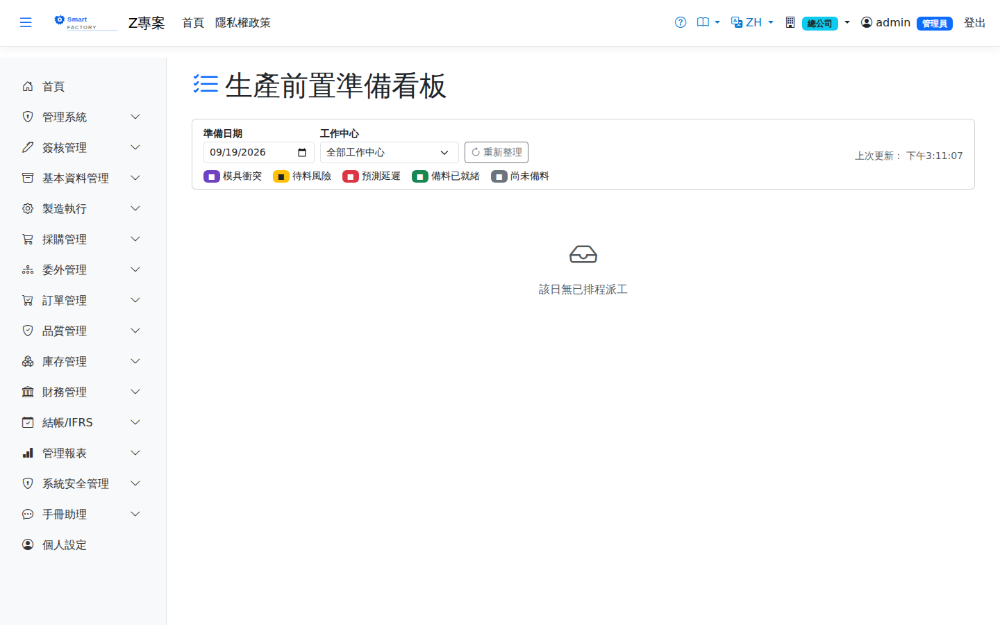

生產準備看板Preparation Board
路由：/PreparationBoard | T-1 日生產前置準備清單（料/模具/程式）Route: /PreparationBoard | T-1 production preparation checklist (material / tooling / programs)
依排程順序列出近期開工派工的準備需求：物料齊套狀況、模具需求與同時段模具衝突、前置警示（背景服務自動產生）。供現場課長每日開工前確認。Lists the preparation needed for dispatches starting soon, in schedule order: kitting status, tooling required and tooling conflicts in the same period, plus advance warnings (generated automatically by a background service). Supervisors check it before work starts each day.

生產準備看板畫面截圖（示意，實際欄位/資料依權限與查詢條件而異）Production preparation board screenshot (illustrative; actual fields and data vary by permission and query criteria)
查詢Search
1
查詢列輸入條件後點「查詢」；欄位標題可點擊排序，清單下方有分頁導航。Enter your criteria on the query bar and click "Search"; column headers can be clicked to sort, and the paging controls sit below the list.
2
預設顯示明日開工清單，可切換日期。Tomorrow's start list is shown by default; the date can be changed.
欄位說明Field reference
查詢條件Query criteria
| 條件Condition | 說明Guide |
|---|---|
| 準備日期Preparation date | 必填Required 要檢視的生產日；看板列出當天開工的派工，以及前一天開工、跨到當天仍在進行的派工（標「延續」，已完工的不列）Production day to view; the board lists dispatches starting that day, plus dispatches that started earlier and are still running into it (marked "Continued from earlier"; finished ones are left out) |
| 工作中心Work Center | 只看單一工作中心；預設為全部工作中心One work center only; all work centers by default |
統計卡欄位Statistics card fields
| 欄位Field | 說明Guide |
|---|---|
| 總派工數Total Dispatches | 該日已排程的派工單總數Total dispatches scheduled that day |
| 模具衝突Tooling conflict | 同一時段同一模具被多張派工佔用的件數，需先調整排程Number of cases where the same tooling is claimed by more than one dispatch in the same period; the schedule has to be adjusted first |
| 待料風險Material risk | 排程開始前料件尚未備齊的派工數Number of dispatches whose material is not yet staged before the scheduled start |
| 換模分鐘數（合計）Total Setup Min | 該日所有派工的準備時間合計，可作為換模順序優化的依據Total setup time of all the dispatches that day, useful for optimising the changeover order |
看板標示Board markings
| 標示Marks | 說明Guide |
|---|---|
| 模具衝突（紫）Tooling conflict (purple) | 該派工使用的模具在同時段被其他派工佔用The tooling this dispatch uses is claimed by another dispatch in the same period |
| 待料風險（黃）Material risk (yellow) | 料件尚未備齊，開工前需先完成備料The material is not fully staged; staging has to be finished before work starts |
| 延續（藍）Continued (blue) | 前一天開工、跨到當天還在做；機台當天被佔用，但不需要再備料或換模Started on an earlier day and still running; the machine is busy that day, but no new staging or changeover is needed |
| 預測延遲（紅）Forecast late (red) | 依目前排程推算，完工時間將晚於須完成日On the current schedule, completion will fall after the required completion date |
| 備料已就緒（綠）／尚未備料（灰）Staged and ready (green) / not yet staged (grey) | 該派工的備料進度；備料中為部分備妥Staging progress of the dispatch; "staging" means partly ready |
若本廠開啟「派工前自動重排排程」，打開時排程已過時會先自動重排，約數秒後才顯示，看到的就是最新的明日計畫（見If the plant has "Reschedule automatically before dispatch" turned on and the schedule is out of date when you open this board, it is re-run first and the board appears a few seconds later showing the latest plan (see 自動重排排程Automatic rescheduling）。).